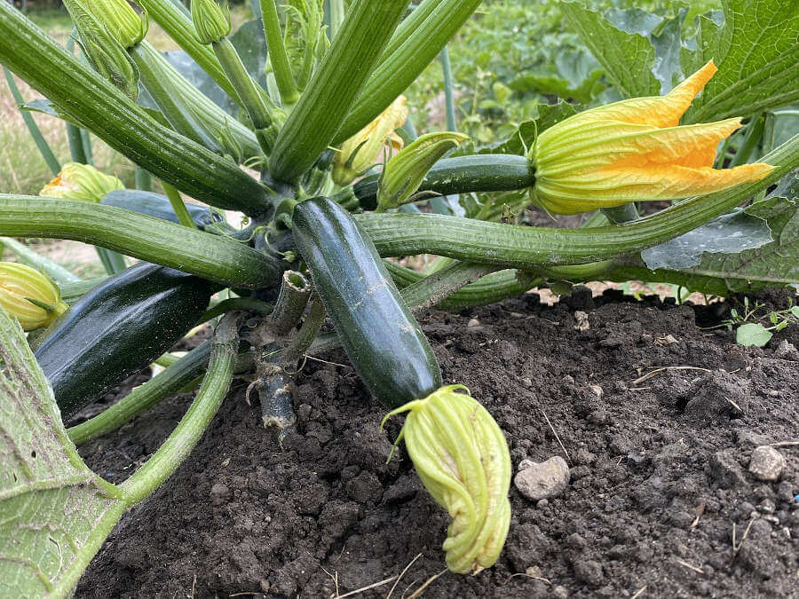
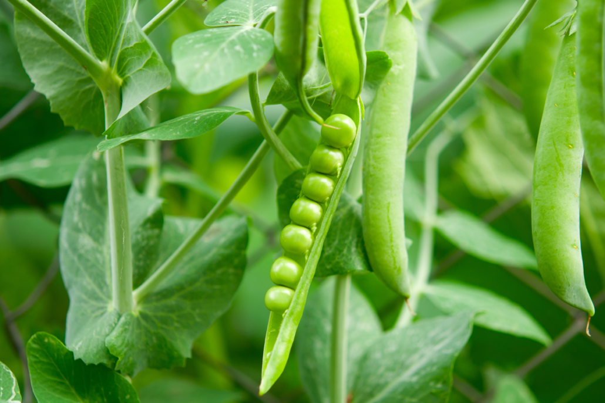

zucchine
coltivare in terreno molto ricco di materia organica e non coltivare dopo le Solanacee o piante della stessa famiglia delle cucurbitacee
- Varietà: Zucchina Chiara di Faenza
- Periodo di semina: Marzo / Aprile
- Primo Raccolto: Fine Aprile
- Ultimo Raccolto: Fine Luglio
- Raccolto
Dimensione Quantità Piccole (10cm) 16 Medie (11-16cm) 26 Grandi(>16cm) 9 51
Piselli
American Wonder:Varietà media precoce come ciclo colturale.
Consigli
- Piantare in semenzario riscaldato.
E' importante:- Acquistare vasetti biodegradabili (di cocco o cartone)
- Mantenere areato il semenzaio per evitare muffe
- Non usare il coperchio del semenzaio
- Non usare mettere il semenzaio vicino il termosifone
- Fissare i sostegni del terreno non appena le piantina raggiungoni i 10cm
- Acquistare una rete con spazi di non più di 10cm per garantire sostegni adeguati